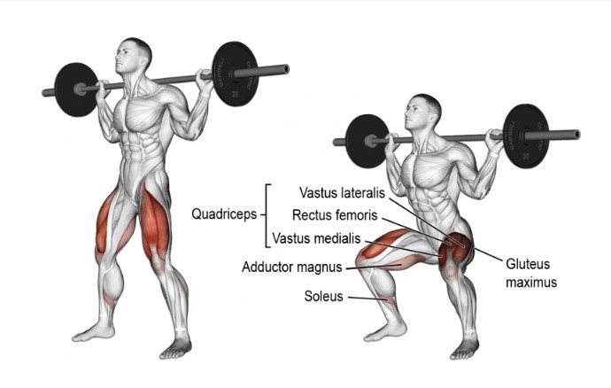
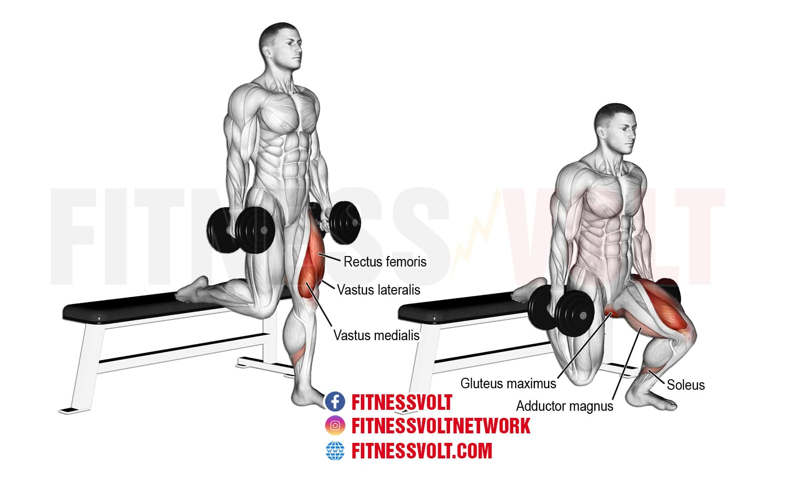
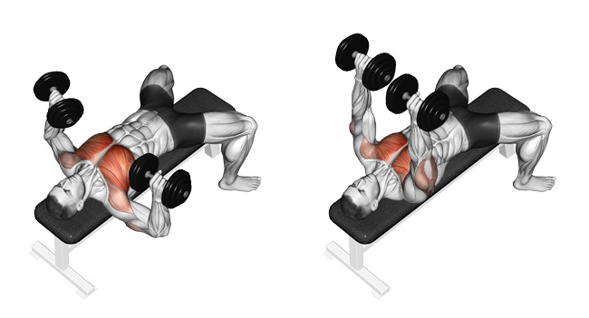
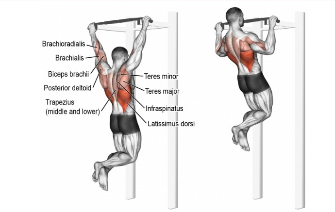
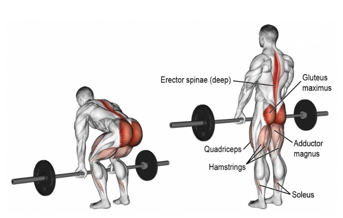

Squat
Voto: 9.5Questo esercizio è considerato uno dei migliori per sviluppare la forza e la potenza muscolare delle gambe, ed è spesso incluso nei programmi di allenamento per gli atleti, i sollevatori di pesi e i bodybuilder. Tuttavia, l'esecuzione corretta dello squat richiede una buona tecnica e una preparazione adeguata, poiché se eseguito in modo improprio può comportare il rischio di infortuni. Nonostante i migliori risultati si hanno in base alle leve, con qualche accorgimento e molto lavoro chiunque può ottenere grandi risultati da questo esercizio, sia in termini di carico sollevato, sia in termini di ipertrofia. L'esecuzione è ben più complessa della semplice accosciata e chi ha i femori lunghi e il busto relativemente corto come i sottoscritto parte svantaggiato, solo il lavoro frequente e costante mi hanno permesso di affinare la tecnica per poter apprezzare a pieno quest'alazata.

Affondi bulgari
Voto: 9.5Gli affondi bulgari sono un esercizio di forza per le gambe che coinvolge principalmente i muscoli dei glutei, delle cosce e dei polpacci. In questo esercizio si tiene una gamba sollevata dietro di sé e si poggia il piede su una panca o una piattaforma, mentre l'altra gamba rimane in posizione di affondo con il ginocchio piegato a 90 gradi e l'alluce in linea con il ginocchio. Questo esercizio è un ottimo complementare per lo squat e si presta ad un range di ripetizioni medio-alto. Se si vuole colpire maggiormente il gluteo basta inclinare il busto in avanti per far sì che quest'ultimo si allunghi maggiormente. Eseguiti subito dopo lo squat portano la fatica percepita ad essere molto alta, qualcosa che ricerco in ogni allenamento, questo in aggiunta ai miglioramenti che porta nello squat rendono questo esercizio per me insostituibile.

DIstensioni su panca piana con manubri
Voto: 9Le distensioni con manubri su panca piana sono un esercizio di forza per la parte superiore del corpo che coinvolge principalmente i muscoli del petto, ma anche quelli delle spalle e dei tricipiti. In questo esercizio ci si sdraia su una panca piana con i piedi a terra e tiene un manubrio con entrambe le mani sopra il petto, con le braccia completamente estese, si prosegue arrivando coi manubri ad altezza petto per ottenere il massimo allungamento del muscolo grande pettorale infine si spinge verso l'alto verticalmente accelerando maggiormente a pochi centimetri dal petto. Di questo esercizio apprezzo il senso di bruciore e pump che fornisce diversamente da una panca piana nonchè lo svincolo articolare maggiore rispetto a quest'ultima.

Trazioni
Voto: 8.5Le trazioni sono un esercizio di forza che coinvolge principalmente i muscoli della schiena e delle braccia. In questo esercizio ci si appende a una barra orizzontale con le mani e le braccia estese e poi si solleva tirando il corpo verso l'alto finché il mento supera la barra. In base alla larghezza della presa si può scegliere quali muscoli colpire maggiormente, una presa più larga si focalizzerà sul trapezio e i romboidi, mentre una presa più stretta si recluterà maggiormente il muscolo gran dorsale e il grande rotondo. Anche il tipo di presa influenza i muscoli maggiormente reclutati, una presa supina coinvolgerà maggiormente i bicipiti mentre con una presa prona il lavoro più grande sarà fatto dalla schiena. Svolgendo entrambe le varianti posso affermare che questo esercizio costituisce insieme alla lat machine l'80% dei risultati di una grande schiena, senza tralasciare l'aspetto funzionale che si porta dietro.

Stacco
Voto: 8Lo stacco da terra è un esercizio di forza che coinvolge principalmente i muscoli della schiena, delle gambe e dei glutei. In questo esercizio ci si pone in piedi con i piedi alla larghezza delle spalle e il bilanciere a terra. Si afferra il bilanciere con una presa a terra e si solleva il peso dal suolo utilizzando la forza delle gambe e della schiena, quindi ci si ferma in posizione eretta mantenendo il bilanciere a braccia tese. In questo esercizio a lavorare maggiormente è il muscolo grande gluteo, non non è da sottovalutare però il lavoro a carico della schiena tant'è che molti lo inseriscono nel giorno in cui allenano quest'ultima. Sono molto avvantaggiati i soggetti con gli arti superiori particolarmente sviluppati per via del rom minore da compiere nell'alzata. Ci sono 2 varianti regular e sumo, con quest'ultima che consente di ridurre ulteriormente il rom spostando molto del lavoro a carico degli adduttori. Lo svolgo da poco ma essendo avvantaggiato come leve mi sta dando fin da subito buone sensazioni senza tralasciare il fatto che è un esercizio il cui lavoro non è replicabile da nessun macchinario.
